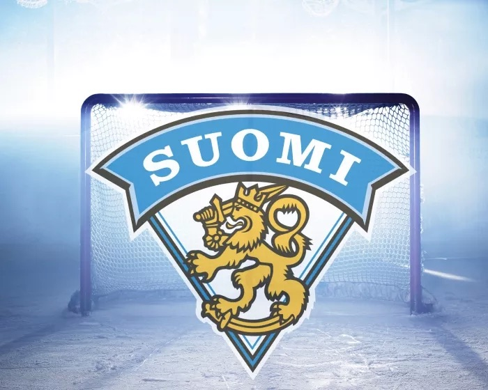
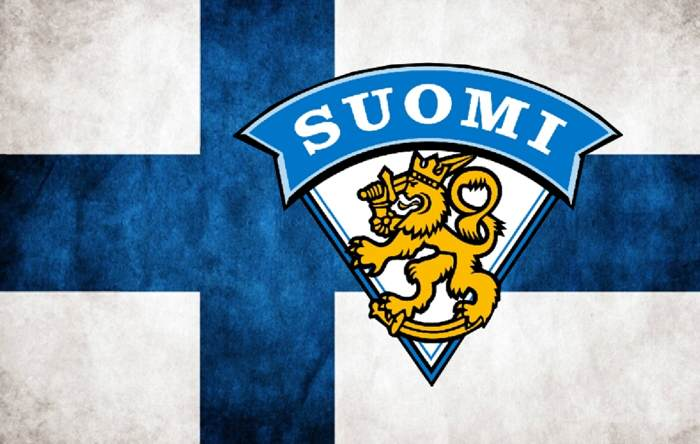
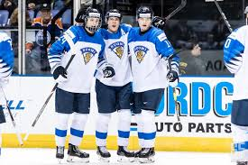
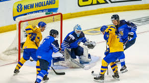
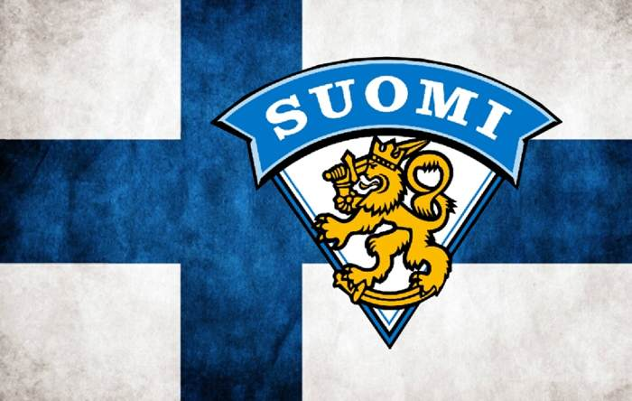
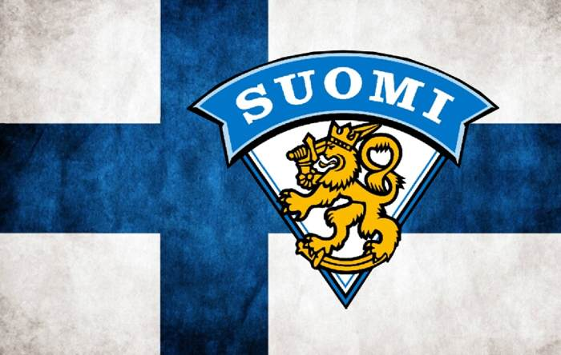
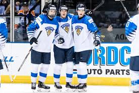
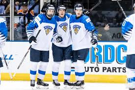
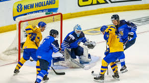
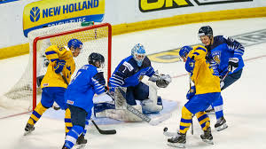

Btatislava, Slovakia — Marko Anttila helped lead Finland to its third world hockey title, scoring the tying and go-ahead goals in a 3-1 victory over Canada on Sunday.
Anttila tied it at 1 on a power play early in the second period and the Finnish captain made it 2-1 early in the third. Harri Pesonen added an insurance goal with five minutes to play.
“It’s awesome,” forward Toni Rajala said. “It’s something that you know might only happen once in your life, but even before the game it felt great. I wasn’t too nervous about it. I was enjoying it. The team played an awesome game again. We played together, played 60 minutes. Kevin was awesome in the net. We were blocking shots. They were good today, but we were a little bit better. Three goals was enough.”
Kevin Lankinen made 42 saves for Finland, allowing only Shea Theodore’s first-period goal.
“It’s an amazing feeling,” forward Jere Sallinen said. “I don’t even know how we won. It’s unbelievable. We’re a pretty good hockey country. Maybe it’s a miracle on ice, something like that. Going back to Helsinki is going to be amazing. I think there’s a lot of people waiting there for us. Anttila – he’s a beauty.”
Finland also beat Canada 3-1 in the round-robin opener.
“It was a long tournament. A lot of fun, a lot of good guys,” Canadian defenseman Damon Severson said. “I think we deserved a medal. We had some spells where maybe we didn’t, but overall we played a really good tournament. It’s unfortunate we got the wrong medal. Finland played a good game, the only team to beat us in this tournament was them, twice, and they played some good hockey.”
Matt Murray stopped 19 shots for Canada.
“I’m very pleased with how we played,” Canadian coach Alain Vigneault said. “We gave it our best shot. At the end of the day, we weren’t able to capitalize on some of our plays and they were.”





 


 


 
